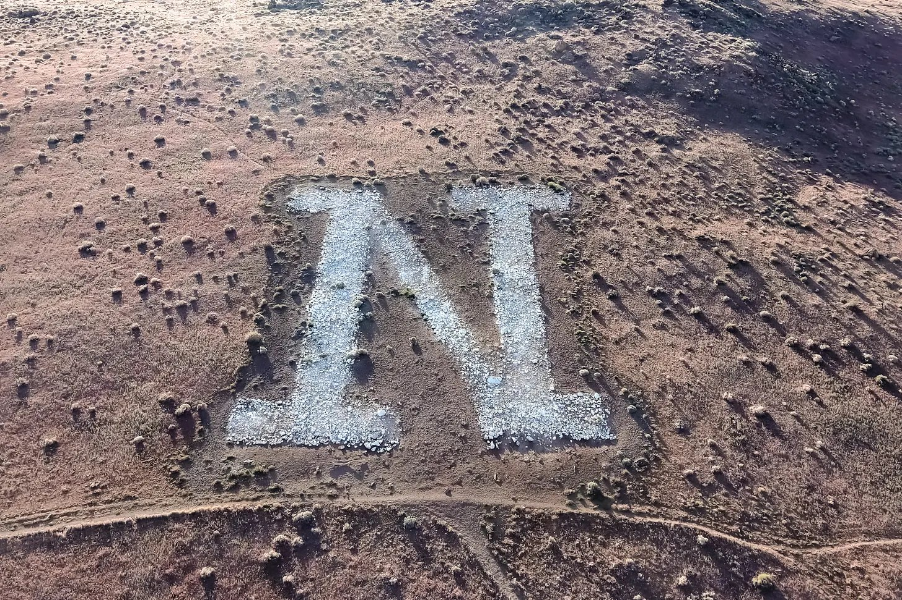
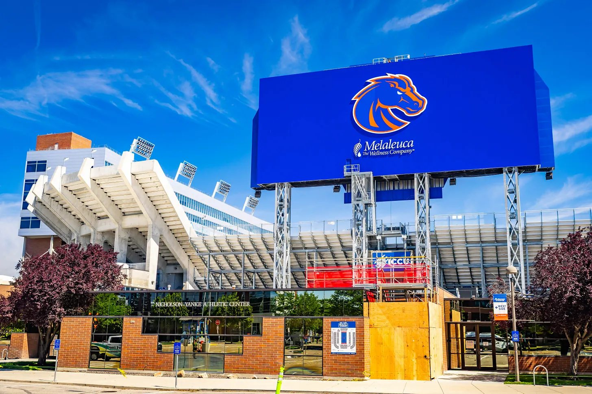
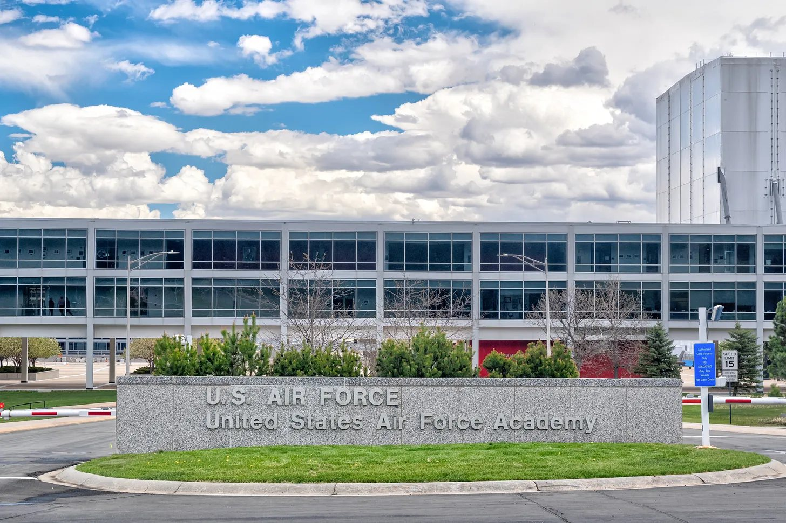
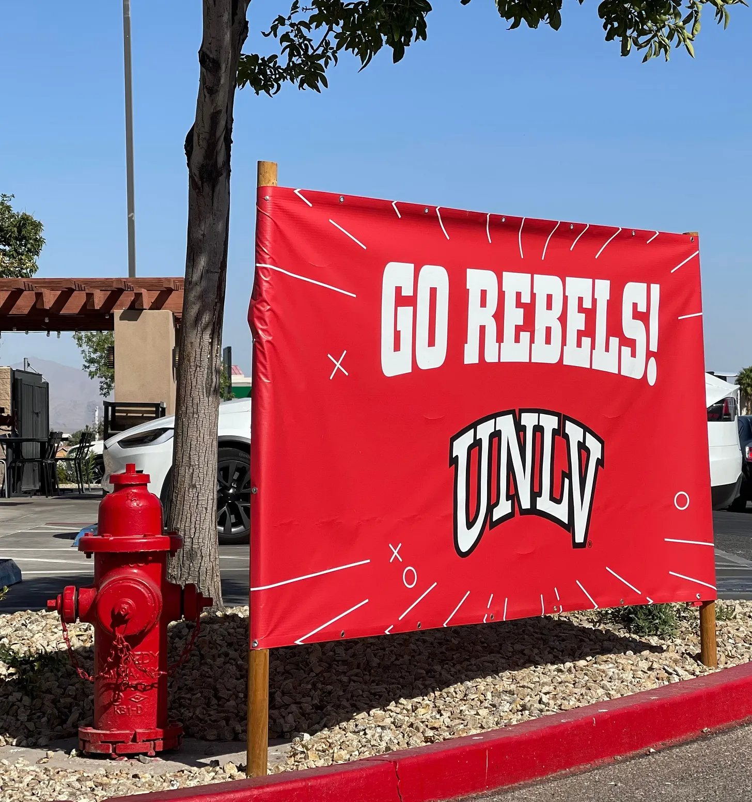
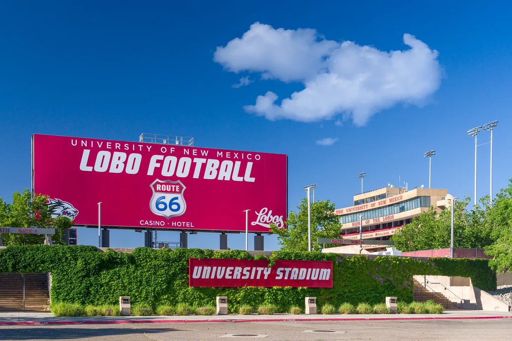
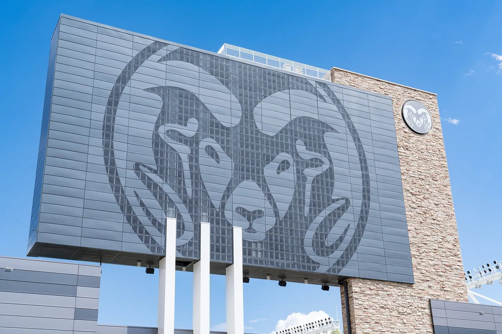
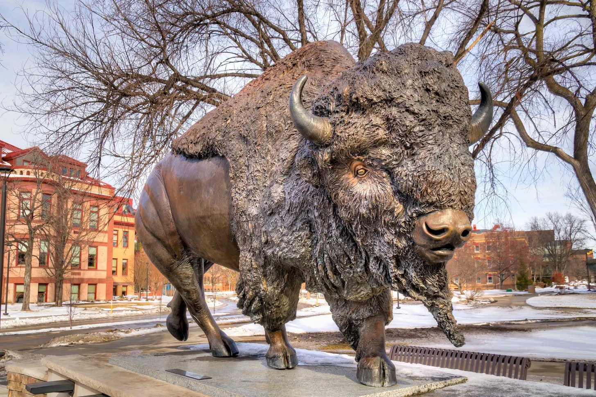

The season of bye weeks has ended and conference races are in full force here in Week 11.
The Boys took a massive victory over The Bot after a not-so-great month of October. A 6-2-2 record is the best record yet in a week for The Boys, and they’ll look to continue that stretch in this week’s 11-game slate.
The Boys now hold a 30-27-2 record over The Bot with three weeks remaining in the regular season. Let’s see if we can extend our lead with this week’s picks.
On bye: None


Sacramento State vs. Central Michigan
Sacramento State 2-9 (1-6), Central Michigan 4-5 (2-3)
Sacramento State wraps up its first season in the Mid-American Conference with a Wednesday night trip to Central Michigan. The Hornets have had an up-and-down season, including some struggles at quarterback, where they have used multiple players under center. Running back Isaiah Ene has been a bright spot, coming off a 107-yard performance against Kent State. Meanwhile, Matt Coleman has been a reliable target in the passing game with six touchdown catches. Sacramento State will need its offense to find some consistency if it hopes to pull off the road upset.
Central Michigan will look to take advantage of its home-field advantage and establish its rushing attack. The Chippewas average 176.6 rushing yards per game, led by Angel Flores, who is averaging 88.3 yards per contest. That ground game should allow Central Michigan to control the clock and put pressure on the Hornets’ offense. Sacramento State has shown improvement defensively, but Central Michigan’s ability to run the football should make the difference.
Bot spread Central Michigan −26.2Bot O/U 45.8


New Mexico State vs. Missouri State
New Mexico State 3-6 (2-3), Missouri State 3-6 (2-3)
New Mexico State and Missouri State enter Saturday’s matchup with identical 3-6 records, making this an important opportunity for both teams to pick up a conference win. The Aggies have a couple of offensive weapons capable of making a difference, especially running back James Jones, who has rushed for 940 yards and is averaging 104.4 yards per game. Wide receiver AJ Williams III is also coming off a huge performance against Liberty, recording eight catches for 150 yards and two touchdowns. Quarterback Trey Hedden added 256 passing yards and two scores in that game, giving New Mexico State some offensive momentum.
Missouri State will look to counter with quarterback Henry Belin IV and its receiving corps. The Aggies’ defense could be a major factor, particularly with its ability to pressure opposing quarterbacks. New Mexico State has recorded 14 sacks in conference play, led by Gabe Peterson’s 5.5 sacks. However, playing on the road against a similarly matched opponent makes this a tough game to call. Missouri State gets the slight edge at home in what should be a close finish.
Bot spread Missouri State −3.6Bot O/U 49.9


Nevada vs. Northern Illinois
Nevada 3-6 (2-3), Northern Illinois 0-9 (0-5)
Nevada and Northern Illinois are both teams sorely in need of a win. The Wolf Pack have won one of their last four games and the Huskies have yet to win a game this season, the only team in the FBS still winless.
The Wolf Pack have only scored 3 points over their last eight quarters of football, however it was against two of the best defenses in the country in UCLA and New Mexico. Quarterback injuries have also played a factor, with AJ Bianco being injured, returning, and being injured again, Luke Duncan not making it more than eight pass attempts against UCLA, and true freshman Reeve Sloan having to make his debut to the tune of four yards passing and two interceptions. All hope is not lost though, despite how poorly the Wolf Pack has been playing, the Huskies present as a much more manageable team.

The Huskies are playing more competitively in their last two games, a five point loss at UNLV and a 11 point loss at San José State. It has been a rough season for Northern Illinois in their first season as a member in the Mountain West Conference, but they’ve slowly been getting better over the course of the season. Taron Dickens is having a solid first season at the D1 level after spending three years at DII Western Carolina and Telly Johnson, Jr. is consistently putting up solid rushing numbers and nearly a touchdown a game.
The Elevation Change model likes a one-score win for Nevada, but The Boys think that it will be a much-needed turnaround game for the Wolf Pack, with our prediction being a 12 point Nevada victory. Both teams are in desperation mode at this point in the season, but we think the Wolf Pack has just a bit more juice left in the tank.
Bot spread Nevada −7.3Bot O/U 48.3


Fresno State vs. Texas State
Fresno State 5-4 (2-3), Texas State 5-4 (3-2)
Fresno State heads to San Marcos to take on a Texas State team that’s coming off a big win over Oregon State!
For the Bulldogs, keep an eye on quarterback Jayden Mandal. He’s been pretty consistent this season, but the biggest thing for him is finishing drives in the end zone. If Fresno State wants to pull off the road win, Mandal is going to have to turn those opportunities into touchdowns.
But Texas State has an absolute monster in the backfield. Torrance Burgess Jr. just ran for 196 yards on 28 carries against Oregon State last week, and he’s already surpassed 1,100 rushing yards on the season! I think the Bobcats lean heavily on him again, and Fresno State struggles to slow him down.
Bot spread Texas State −8.7Bot O/U 56.7


Oregon State vs. Boise State
Oregon State 5-4 (3-2), Boise State 8-1 (5-0)
College GameDay is heading to Idaho! And we’ve got a massive matchup on the blue turf between Oregon State and Boise State!

The Beavers are coming off two straight losses, and things aren’t getting any easier this week. Jesse Legree and Braden Atkinson have been making plays for this Oregon State offense, and they’ll need to keep that going if the Beavers want to keep up with Boise State.
But the bigger question is whether Oregon State’s defense can contain this Bronco offense. Dylan Riley is coming off a monster performance with 192 rushing yards on just 19 carries, and he’s already recorded 1,200 yards on the season!

And don’t overlook Boise State kicker Canaan Moore, who’s been nearly automatic this year, missing just one field goal.
With College GameDay in town, the blue turf is going to be rocking! I think Boise State’s offense proves to be too much, and the Broncos keep their College Football Playoff hopes alive.
Bot spread Boise State −9.5Bot O/U 63.4


San José State vs. Air Force
San José State 5-5 (3-3), Air Force 7-2 (3-2)
Air Force returns to Mountain West play after a two-game hiatus against UConn and Army when they face San José State on Saturday.
The Falcons are coming off of their 22nd Commander in Chief’s Trophy after their 24-21 win at Army. Evan Medders returned to start at quarterback, but fullback-turned-quarterback Kemper Hodges was the real star. Hodges ran for 119 yards and a touchdown to lead the Falcons to the upset victory. Air Force is 3-2 in conference play, but 4-0 in every other game this season.

San José State has three conference victories this season, but they’ve all come against the three worst Mountain West teams in Hawai‘i, UTEP, and Northern Illinois. The Spartans have had competitive losses against some of the league’s best, but have yet to prove that they can make the jump to the Mountain West elite. Daniel Rolovich started his second game for the Spartans in place of injured Luke Weaver. Rolovich had the best game of his career, throwing for 237 yards and a touchdown in last week’s victory. Rolovich now sits as the starter on the Spartans’ depth chart, signaling the trust the Spartans coaching staff has in the freshman.
The Elevation Change models like Air Force by two scores, and we had the same thought. San José State looked better with Rolovich against Northern Illinois last week, but expect the Air Force Falcons to come away with their seventh victory in their last eight games.
Bot spread Air Force −12.2Bot O/U 49.3


UNLV vs. New Mexico
UNLV 5-4 (3-2), New Mexico 8-1 (5-0)
The AP No. 23 New Mexico Lobos secured their first victory as an AP ranked team in their relatively easy 31-3 victory over Nevada last week. They’ll be set to take on a UNLV Rebels team that’s struggled after a 3-0 start in conference play.
The Rebels are 1-2 in their last three games, with hard fought losses against Wyoming and Air Force while also having a closer-than-expected victory over Northern Illinois. Quarterback Jackson Arnold was benched following a dismal 83 yard performance halfway through the Rebels loss against Wyoming, and UNLV turned to Alex Orji, who didn’t inspire much confidence with only 58 yards and an interception in relief.

New Mexico has shown that their defense can continue to win them games despite middling quarterback production. No team has been able to put more than 18 points on the Lobos defense, which statistically ranks as the best in the country. The dual threats of Brett Karhu and Darren Agu on the line, 14 sacks combined between the both of them, and Tavian Combs and Austin Brawley in the secondary, each with four interceptions, has allowed the Lobos to feast on any team that dares to touch the same field as them. Look for the defense to continue showing why they are the best in the country against the Rebels.

The Elevation Change model likes New Mexico big, but we’re projecting that, perhaps surprisingly, UNLV will be able to put up more points on this Lobos defense than any team has this season. Our model thinks this will be a blowout, but we think the Rebels will keep it a lot closer than the model is expecting in the Lobos sixth conference victory.
Bot spread New Mexico −16Bot O/U 53


Utah State vs. San Diego State
Utah State 4-5 (3-2), San Diego State 4-5 (3-2)
Utah State is starting to find some momentum, coming into this matchup against San Diego State riding a two-game winning streak!
And defensively, the Aggies have two guys who have been all over the field. Safety Brevin Hamblin leads the team with 71 tackles, while linebacker Asher Cunningham is right behind him with 70. Those two are going to be huge if Utah State wants to make it three straight wins.
But San Diego State has a tackling machine of its own in linebacker Sione Hala, who’s already racked up 90 tackles this season!
And in a game that I expect to come down to the wire, don’t forget about Aztecs kicker Cooper DeLiva. He’s missed just one field goal all year, and that kind of consistency could be a difference-maker in a close game.
I think this one stays tight all the way through, but I’m rolling with the Aggies to extend their winning streak!
Bot spread Utah State −1Bot O/U 43.7


Wyoming vs. UTEP
Wyoming 6-3 (5-1), UTEP 1-8 (0-5)
How about those Wyoming Cowboys?! Four straight wins, and now they’re heading to El Paso looking to make it five!
But there’s one pretty big concern for Wyoming heading into this matchup. Quarterback Tyler Hughes, who leads the Cowboys in both passing and rushing yards, is doubtful with a small fracture in his throwing forearm. That’s a massive loss for an offense that’s relied so heavily on his playmaking ability.
That means guys like Landon Sims are going to have to step up and make a difference if Wyoming wants to keep this winning streak alive.
Meanwhile, UTEP has been heading in the complete opposite direction, losing seven straight games.
If the Miners want to finally get back in the win column, running back Raymond Moore III is going to have to get things going on the ground and take some pressure off the rest of the offense.
Even with the uncertainty at quarterback, I think Wyoming finds a way to keep rolling and makes it five straight!
Bot spread Wyoming −10.8Bot O/U 47.6


Colorado State vs. Washington State
Colorado State 3-6 (1-4), Washington State 1-8 (0-5)
The enigma that is the Colorado State Rams will take on the travesty that is the Washington State Cougars.
The Rams have not been able to stop a single team this season, outside of a season opening win against a Wyoming team that had four turnovers. Even after firing their defensive coordinator mid-game against Oregon State over a month ago, the interim defensive coordinator has allowed 56 or more points in three of the four games the Rams have played since. Even the return of quarterback Hauss Hejny couldn’t save a Rams team who is looking for any answers on the defensive end.

Washington State hasn’t had a much better season, sitting at 1-8 on the year and 0-5 in Pac-12 play, the only team yet to win a game in conference. The Cougars have struggled to score, surpassing 20 points just twice this season. They’re already on their second quarterback of the year, with freshman Owen Eshelmen taking over for benched starter Cade Pinnick. Eshelmen has looked good in his limited appearances, but the lack of quality players around him has hindered his development this season.
In a game where it is stoppable force meets movable object, the Elevation Change model likes the Cougars for the first time this season, and by a considerable margin. We don’t think the win will be as big, but we too agree that the Cougars will finally get their first Pac-12 win, much to the chagrin of the Rams.
Bot spread Washington State −10.2Bot O/U 61.9


North Dakota State vs. Hawai‘i
North Dakota State 7-2 (4-2), Hawai‘i 3-6 (2-4)
North Dakota State travels to Honolulu this weekend to take on Hawai‘i in a matchup between two teams heading in different directions. The Bison enter at 7-2 and have been one of the toughest defensive teams in the country, allowing just 11.9 points per game. Hawai‘i comes in at 3-6 but has some momentum after winning its last two games. Quarterback Micah Alejado has thrown for 2,489 yards this season and will be the key to the Rainbow Warriors’ chances. Freshman receiver Titan Lacaden is another player to watch after catching 11 passes for 109 yards and a touchdown in the team’s win over UTEP.

The biggest challenge for Hawai‘i will be finding room against a North Dakota State defense that allows just 124.4 passing yards per game. The Bison have the physicality to control the game on both sides of the ball, and their offense has averaged 28.1 points per contest. Tight end Reis Kessel has become an important target, coming off a six-catch, 85-yard performance against UTEP. Hawai‘i should have some success at home, but North Dakota State’s defense and physical style of play should be too much to overcome.
Bot spread North Dakota State −10.3Bot O/U 44.8